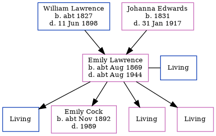

Emily Cock (née Lawrence) cAug 1869 - c1944
[ Home ] | [ Calendar ] | [ Surnames Index ] | [ Errors ] | [ Family History ]The child of William Lawrence (a harbour labourer) and Johanna Edwards, Emily Lawrence, the great-great-aunt of Nigel Horne, was born in St Lawrence, Thanet, Kent, England c. Aug 18691,2, was baptised there on 8 Aug 1869 and also married Berzillai Cock (a shipwright with whom she had 4 children: Barzillai Stephen W, Emily Elizabeth, Mary Lilian and Elsie E, along with 3 surviving children) there on 9 Dec 18884.
During her life, she was living at Rear of Southwood Lodge, St Lawrence, Thanet, Kent, England on 2 Apr 18716; and at Napier Road, Gillingham, Kent on 31 Mar 19017.
She died c. Aug 1944 in Chatham, Kent, England3 and was buried in Gillingham, Kent, England on 15 Sept 1944 (a day with light rain)5.
Parents
- William was born c. 1827
- Johanna Brooker was born in 1831
Children
- Emily Elizabeth was born c. Nov 1892
Citations
- 1871 England Census Online publication - Provo, UT, USA: The Generations Network, Inc., 2004.Original data - Census Returns of England and Wales, 1871. Kew, Surrey, England: The National Archives of the UK (TNA): Public Record Office (PRO), 1871. Data imaged from the National
- England & Wales births 1837-2006 - Findmypast
- England & Wales deaths 1837-2007 - Findmypast
- Kent Marriages And Banns - Findmypast
- Kent Burials - Findmypast
- 1871 England, Wales & Scotland Census - Findmypast (was age 1 and the daughter of the head of the household)
- 1901 England, Wales & Scotland Census - Findmypast (was age 32 and the wife of the head of the household)
Media
England & Wales births 1837-2006 - BMD/B/1869/3/AZ/000406/292
Kent marriages and banns - GBPRS/CANT/M/97022138/2
England Marriages 1538-1973 - R_848396598/2
1901 England, Wales & Scotland Census - GBC/1901/0005781310
England & Wales Deaths 1837-2007 - BMD-D-1944-3-AZ-000156-093
Kent Baptisms - GBPRS/CANT/B/96404677
England Births & Baptisms 1538-1975 - R_885341121
Kent Burials - KENT/FHS/BUR/CIVIL/086001
Family Tree
Map
Generated by ged2site. Last updated on Jul 3, 2024
Known Issues
1939 UK register information missing